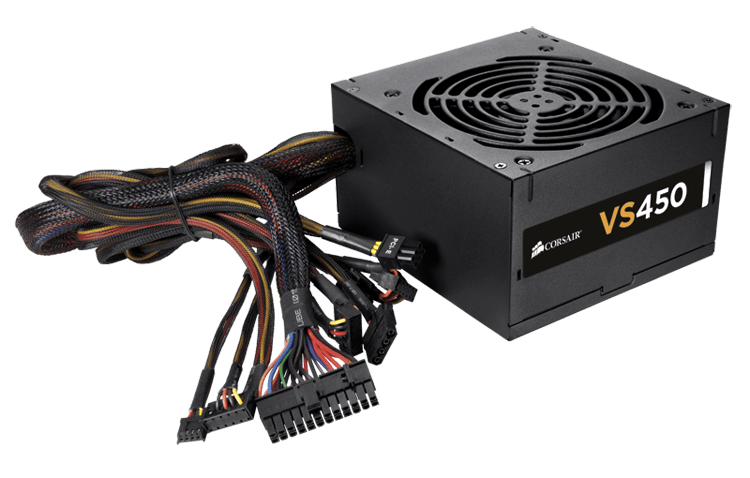
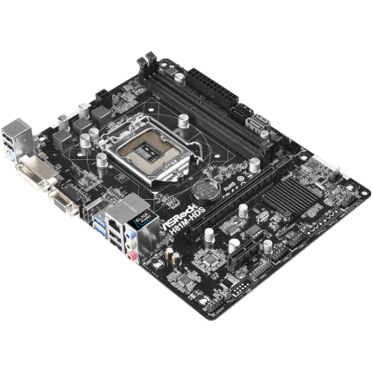
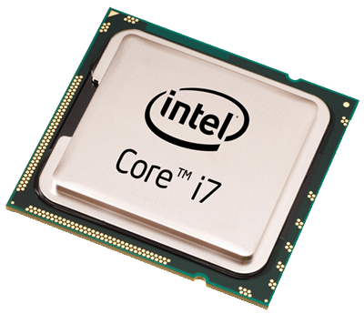
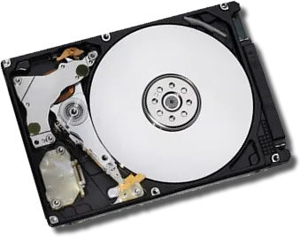

Les composants informatiques d'un ordinateur :
Introduction
Aujourd'hui, les ordinateurs sont partout. Aussi bien chez les particuliers que les entreprises.
Ceux-ci sont composés de plusieurs composants, chacun ayant un rôle bien défini.
Découvrez les avec PC par Coeur.
1. alimentation
L’alimentation de l’ordinateur sert à alimenter l’ordinateur, et donc fournir de l’énergie aux différents composants dans ce dernier. Elle transforme le courant alternatif à 220 V du secteur en courant continu, ce qui permet de le diffuser dans le reste de l’ordinateur.
2. Carte mère
La carte mère est un circuit imprimé, qui supporte de nombreux composants présents dans l’appareil et permettant le bon fonctionnement d'un ordinateur. Elle est considérée comme le cœur même de l'ordinateur. Elle est en effet connectée à des composants comme le processeur ou la mémoire vive.
3. Processeur
Ce composant est présent dans de nombreux dispositifs électroniques, il exécute les instructions machine des programmes informatiques. Il existe différentes marques de processeurs, les plus répandus étant INTEL et AMD. (notamment avec AMD RYZEN, prenant une place de plus en plus importante sur le marché). Le processeur se place sur le socket de la carte mère.
4. La mémoire vive RAM

C’est ici que l’on trouve la mémoire informatique dans laquelle peuvent être enregistrées les informations
temporaires traitées par les programmes informatique.
Elle est beaucoup plus rapide que les disques durs,
et c'est pour cela que c'est elle qui s'occupe des informations temporaires. Elle est également beaucoup plus chère.
5. Le disque dur/SSD/EMMC
Le disque dur, le SSD ou l'EMMC du pc, sont des composant servant à stocker des informations de façon permanente contrairement à la RAM permettent de stocker des données temporairement. Le SSD étant informatisé, il est bien plus pratique qu’un simple disque dur physique (disque qui tourne), et aussi plus rapide que l'EMMC.
6. Le lecteur-graveur

Le lecteur-graveur permet de lire / écrire sur des CD pour stocker des données. Il est également utilisé pour lire des blu-ray (films) ou CD audio. Il peut lire tous les types de CD (sauf les dvd : films).
7. La carte graphique

La carte graphique, est un composant permettant l'affichage de graphisme 2D ou 3D sur l'écran d'un ordinateur. Elle est utilisée pour de nombreux calculs. Au fil des années, celles-ci deviennent de plus en plus puissantes, et délivrent une expérience à l'utilisateur de plus en plus immergente, comme avec le Ray Tracing de NVIDIA. Encore une fois, sur ce marché, se battent principalement AMD et NVIDIA. Elle possède sa propre mémoire, la VRAM (mémoire vidéo).
Nos sources:
Les descriptions des composants
- Imedias
- Connaissances personnelles